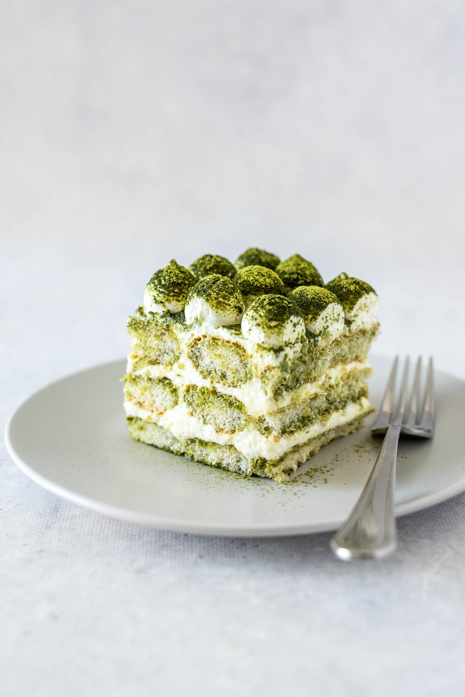

Let's make matcha tiramisu!

Description
I'd like to share Japanese desserts. This recipe is no bake; just mix all ingredients and sit it in refrigerator and so easy to make. Enjoy my favorite recipe!
Ingredients
- 1 ⅛ cups finely crushed graham cracker crumbs
- 3 ½ tablespoons unsalted butter, melted
- 7 ounces cream cheese, at room temperature
- 6 tablespoons white sugar
- 1 teaspoon white sugar
- 7 ounces mascarpone cheese
- 3 tablespoons matcha green tea powder, plus more for dusting
- 1 cup heavy whipping cream
- 1 tablespoon unflavored gelatin
- 3 tablespoons warm water
- 1 teaspoon confectioners' sugar for dusting (Optional)
- 3 strawberries, sliced
Steps
- Stir graham cracker crumbs and melted butter together in a bowl until moistened; press crumb mixture evenly into the bottom of a 7-inch round springform pan. Place pan in refrigerator until cold, about 20 minutes.
- Beat cream cheese and 6 tablespoons plus 1 teaspoon sugar together in a bowl with an electric mixer until smooth; beat in mascarpone cheese. Stir 3 tablespoons green tea powder into cheese mixture.
- Beat cream in a chilled glass or metal bowl with an electric mixer until soft peaks form. Fold whipped cream into cream cheese mixture.
- Stir gelatin into warm water in a small bowl until dissolved. Stir gelatin mixture into cream cheese mixture; pour mixture over refrigerated graham cracker crust. Chill in the refrigerator until firm, at least 4 hours.
- Dust top of tiramisu with green tea powder and confectioners' sugar; decorate with sliced strawberries.